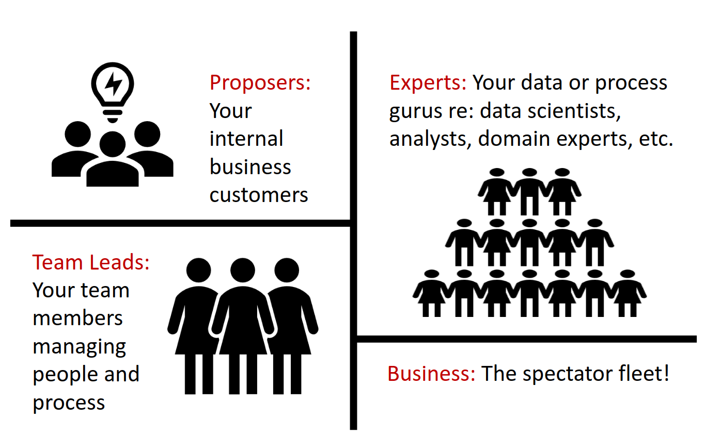

User Roles in the system have particular significance in terms of; functions, access, etc: The four types of User Roles are:
The Proposer:
Generally, a Business Unit user who proposes the idea or problem as an Opportunity.
- A Proposer can Capture (i.e. create) an Opportunity by providing the relevant details and Submit an Opportunity for consideration.
- By default, the Proposer is a member of the Team working on the Opportunity.
- The Proposer has access rights to change the contents of an Opportunity created by them as entered during the Capture Phase (e.g. update Business Benefits) – even after the Opportunity has been submitted.
- On completion of the Shape Phase, if requested, the Proposer can also provide an Endorsement for the Opportunity to continue to the next phase.
- As an on-going member of the Team working on the Opportunity, the Proposer also has Read-Only access to all other Phases of the Opportunity
Team Leads
The Team Lead perform functions such as; managing the pipeline, pulling items off the Backlog, Assigning resources, etc
- A Team Lead can also have a dual role of Expert see below (e.g. Data Scientist, BA)
- In Shape Phase – a Team Lead can initiate work on the Shape phase of an Opportunity, by selecting an Opportunity from the Opportunity Pipeline.
- In Shape Phase – a Team Lead can assign an Expert to review the Opportunity or assign themselves to review the Opportunity
- In Shape Phase – a Team Lead can re-direct the Opportunity to another Resource Team, if it is more appropriate for the other Resource Team to deal with it.
- In Shape Phase – a Team Lead can also Endorse an Opportunity on behalf of the Proposer of the Opportunity
- In Analyse Phase - a Team Lead can initiate work on the Analyse phase of an Opportunity, by selecting an Opportunity from the Opportunity Pipeline.
- In Analyse Phase – a Team Lead can fulfil resource requests created in the Shape phase, by assigning resources to work on the Analyse and Recommend phases of an Opportunity.
Experts
The people that do the work, such as; Business Analysts, Data Scientists, etc
- In-Shape Phase, an Expert can be assigned to review (e.g. Shape, Scope) the Opportunity
- Experts are also assigned to work on subsequent phases of an Opportunity - as an individual or as members of a team working on the Opportunity.
- Experts are also required to update their Profiles (via My Stuff) i.e. Roles, Skills, Proficiencies, etc to enable selection and assignment to Opportunities in need of their skills.
General Users
Interested Users (i.e. Sponsors, Management) who are provided Read Only access to system – they can view details of an Opportunity and leave comments, etc.